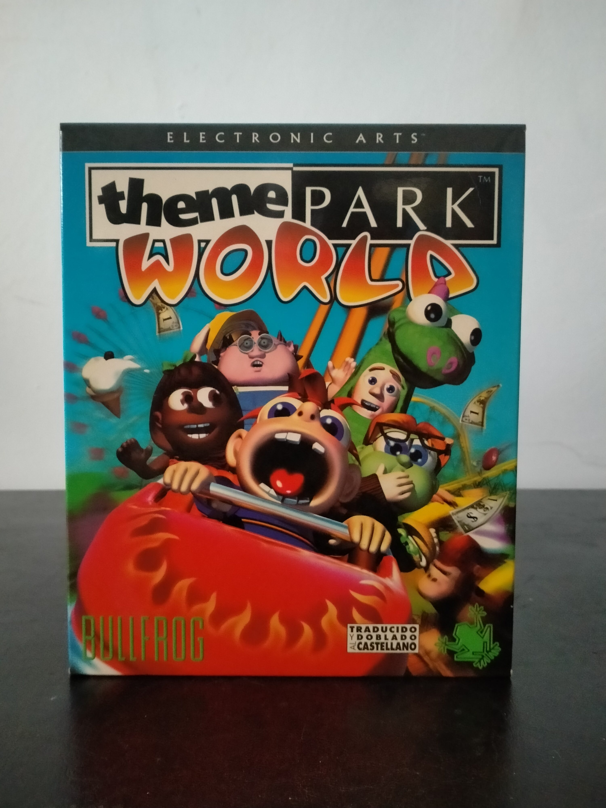

Ficha #000055
Theme Park World
Theme Park World es un videojuego de simulación y gestión de parques temáticos desarrollado por Bullfrog Productions y publicado por Electronic Arts a finales de los años noventa. Supone una evolución del influyente Theme Park original de 1994, trasladando la fórmula clásica de gestión empresarial y construcción de atracciones a un entorno completamente tridimensional y orientado a un público más amplio y accesible. El juego permite diseñar parques inspirados en distintas temáticas, construir montañas rusas y atracciones complejas, gestionar personal, controlar precios y satisfacer las necesidades de los visitantes. Esta edición española distribuida por Electronic Arts incluye traducción y doblaje al castellano, algo destacado en la propia caja. Theme Park World es considerado uno de los últimos títulos emblemáticos de Bullfrog antes de la desaparición progresiva del estudio tras su integración en Electronic Arts, y representa una pieza importante dentro de la historia de los juegos de gestión para PC de finales de los noventa.
- Formato
- Big Box
- Plataforma
- Win95 Win98
- Género
- Simulación Gestión Construcción y gestión Tycoon
- Serie
- Todos Big Box
- Desarrollador
- Bullfrog Productions
- Distribuidor
- Electronic Arts
- EAN
- —
Contenido de la edición
- CD-ROM
- Manual
- Tarjeta de registro
- Tarjeta promocional
- Hoja de referencia
Preservación
- Protección
- Verificación de CD
- Formato recomendado
- BIN/CUE
- Jugable en virtualización
- Sí
La preservación habitual se realiza mediante imagen BIN/CUE del CD-ROM original. El juego puede ejecutarse en sistemas modernos mediante wrappers o máquinas virtuales compatibles con Windows 95/98.